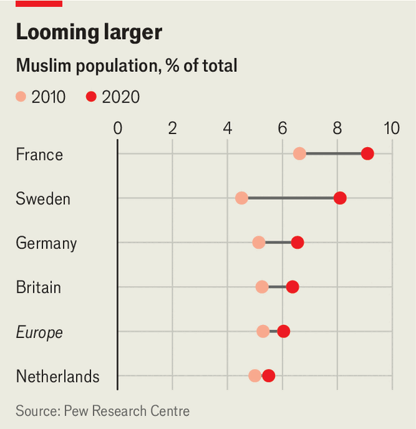
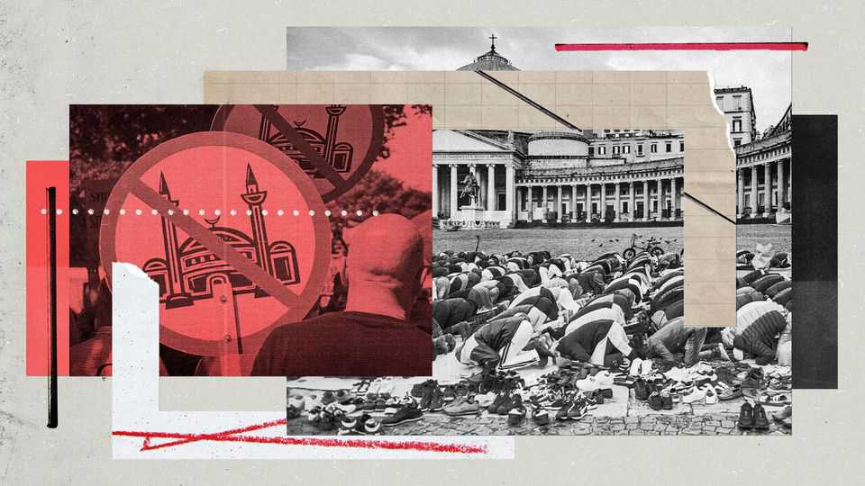

The good news: few Muslims want to subvert European democracy
The bad news: there is no easy way to counter those who do

Sep 10th 2026
Mohamed Louizi was first approached by representatives of the Muslim Brotherhood, in Casablanca, Morocco at the age of 13. By 18 he had pledged allegiance to the movement, which works to institute Islamic rule around the world. In 1999, as a student in France, he became its representative at two mosques and head of the local branch of the Muslim Students of France in the city of Lille. His task, he says, was “to spread Islamism”—the idea that Islam should be the organising principle of government and society.
But by 2006, alarmed by what he had begun to see as a “totalitarian project”, Mr Louizi quit the Brotherhood. He considers the movement a “real danger” for France and for Muslims: “We need to help the Muslim community get rid of Islamism.”
The French authorities, too, are worried about the Brotherhood’s activities. A report published by the interior ministry in 2025, entitled “The Muslim Brotherhood and Political Islam in France”, concluded that it could, in time, threaten the country’s secular rules and women’s rights. Measuring the threat is tricky because the Brotherhood “practises entryism”, the report said, using a “double language, by which it hides its real intentions while claiming to share the rules and principles regulating western societies”.

It is not just France where Islamism is seen to be a threat. Sweden’s centre-right government recently initiated a formal inquiry into its “infiltration in Swedish society”. “Islamism as a political ideology threatens several fundamental values of Sweden’s democratic society,” declared Hans Eklind, a government MP, in the accompanying press release. Ahead of elections in Berlin later this month, the CDU, Germany’s ruling party, has put up posters promising Freiheit statt Islamismus (“Freedom rather than Islamism”).
Europe’s right-wing populists go much further, routinely assailing Muslim immigrants as a threat to European civilisation. The AfD, which won an election this week in the German state of Saxony-Anhalt, pledged to curb construction of mosques there and restrict any public Muslim calls to prayer. Eric Zemmour, a French nationalist, once warned that Muslims want to “slit our throats”. Richard Jomshof, an MP for the Sweden Democrats, says the best thing for Swedish Muslims to do is “stop being Muslims”. The PVV, a Dutch party, wants to ban Islam for 20 years. Fully 39 of the Netherlands’ 150 MPs supported a parliamentary motion earlier this year stating, “Islam does not belong in the Netherlands.”
The anti-Muslim clamour may be deafening, but the actual numbers of Muslims are modest. They account for less than 10% of the population in every Western European country (see map). Their numbers, however, have been growing fast. Lots of European countries, including France, Germany and Sweden, do not compile official statistics on their citizens’ religious beliefs. Yet estimates suggest that the Muslim share of France’s population jumped from 6.6% in 2010 to 9.1% in 2020. In Sweden, the leap has been even faster, from 4.5% to 8.1%. In most European countries Muslims are a growing presence (see chart).

Much of the growth comes from a wave of refugees from Syria and elsewhere that peaked in 2015. Broadly speaking, the new arrivals have integrated quickly. Germany’s Institute for Employment Research says that 64% of those who had arrived in 2015 had found work by 2022, close to the national employment rate of 70%. Last year a report from University of Münster found that 88% of Muslims feel comfortable in Germany and 73% wanted to integrate “unreservedly and without qualification”.
In Britain the children of immigrants do better at school than the native-born. A study by France’s National Institute of Demographic Studies found that 32% of the children of parents who both immigrated from the Maghreb hold a higher-education degree. That is lower than the figure for France as a whole, 43%, but far higher than the 3% of their parents who do.
Nonetheless, there are pockets in many European countries where integration is proceeding slowly, if at all. Swedish police label a neighbourhood a “vulnerable area” if it has persistent problems with crime, religious extremism or “parallel social structures that challenge the functionality of society”. The suburb of Rosengard, in the southern city of Malmo, has been on its list for more than a decade. It appears to be strongly Muslim, despite the lack of official data. “On Eid everything here stops,” says Kashif Virk, an imam from Malmo’s small group of Ahmadi Muslims. In the local shopping centre, almost every woman is wearing a head covering. “It’s a very segregated area,” says Mr Virk.
That does not make Rosengard a “no-go zone”, however, as some alarmists have claimed. In fact, it receives extra attention from the police. Nor have the growth of Europe’s Muslim minority and the problems with integration led, as many pessimists had predicted, to an explosion of violence in the name of Islam. Europol reports that there were 24 attempted acts of jihadist terror in the European Union last year, most of which were foiled. The nine that were carried out (eight of which were stabbings and one an attempt to run people over with a car), led to five deaths. Most involved lone assailants, without clear external assistance or encouragement. The numbers for 2024 were similar, with six attacks causing six deaths. There was nothing even remotely on the same scale as the 9/11 attacks in America in 2001, whose 25th anniversary falls this week. An assault on a gay pride parade in Berlin in July, in which an extremist rammed participants with a van, killing one, is typical.
Police in European countries have long experience of countering Islamic terror networks. They arrest hundreds of suspected jihadists each year. They had, in fact, arrested the attacker in Berlin, a 21-year-old German of Lebanese descent named Abdul Ballout. He had been convicted of planning a terror attack two months before he actually perpetrated one, but a court had suspended his sentence. Although the justice system malfunctioned, police and intelligence agencies seem to have been alert to the danger.
But even as police have become better at curbing violent extremism, the authorities in many European countries have grown more anxious about Muslims who, although eschewing violence, work to undermine liberal freedoms and secular principles. German officials, for instance, fret about legalistischer Islamismus, or “legalistic Islamism”, which they see as a threat to the constitutional order. Simona Mohamsson, Sweden’s education and integration minister and herself the daughter of Muslim immigrants, mistrusts “political Islam” which “aims to shape and influence Swedish society”. A report from the French Senate in January concluded that the Muslim Brotherhood’s methods and ideology “threaten our democratic values and our societies’ security”. In April a senator from the centre-right Republicans party presented a draft bill designed to “fight entryism” in France, arguing that this “new strategy deployed quietly by Islamist entities” was designed “to replace the republic’s principles with religious law”.
Intelligence agencies point to outfits like FEMYSO, an association of Muslim youth organisations from around Europe, which denies any ties to the Brotherhood but which, the spooks say, is riddled with its supporters. FEMYSO purports to speak for all Muslim youth and has received funding from the European Union. Its public activities include seemingly anodyne campaigns against Islamophobia. For its critics, that is the point: Islamist members get to present themselves as mainstream Muslims and make friends in high places. But others see this as hysteria. “It’s not in the data,” says Nader Hotait of the German Centre for Integration and Migration Research in Berlin, referring to Germany: “Nobody has been able to substantiate a threat that corresponds to the moral panic about the Muslim Brotherhood.”
The numbers of people involved are small. The French interior ministry’s report estimated that there were 400–1,000 members of the Brotherhood in France. These were linked to some 280 charities, youth organisations, sports clubs and the like, as well as 139 mosques (out of a national total of 2,800). It said that about 91,000 people attend such places of worship, out of an estimated Muslim population of about 7.5m. The report also noted ties between the Brotherhood and 21 of the 74 Muslim schools in France, educating 4,200 pupils (out of a national total of 5.6m).
The Bundesamt für Verfassungsschutz (BfV), Germany’s domestic-intelligence agency, also keeps tabs on local Islamists. It estimates that the groups it tracks have roughly 28,000 members. The Dutch authorities, for their part, estimate that only 3-5% of Dutch Muslims (perhaps 25,000-50,000 people) have fundamentalist views.
But countering Islamism is much harder than these numbers might suggest. For one thing, the distinction between Muslims with illiberal views and those seeking to capture or undermine democratic institutions is not always clear. Many Muslims denounce homosexuality and would like to ban the burning of the Koran or the publication of satirical cartoons of the prophet Muhammad. As Ms Mohamsson notes, it is not a crime to have “deeply conservative religious values”. “It’s very difficult to draw the line,” says Andy Grote, the interior minister of Hamburg, which has the greatest concentration of Muslims of concern to the authorities of all Germany’s states.
At Sweden’s previous election, in 2022, more than 30% of voters in Rosengard’s main electoral district cast their ballots for the Nuance Party, which wants to criminalise Islamophobia and the desecration of the Koran (it won just 0.4% of the national vote). Especially for younger Muslims, adherence to seemingly conservative, anti-secular views may be a way of expressing their identity in the face of widespread hostility to Islam. Last year a poll suggested that 44% of French Muslims would prefer to respect Islamic law over French law, up from 28% in 1995. Among those under 25 the figure was 52%.
What is more, Islamists with genuinely subversive goals deliberately muddle the boundaries between themselves and other Muslims. In June Sinan Selen, the (Turkish-born) head of the BfV, is said to have warned a closed-door session of lawmakers about German groups linked to the Muslim Brotherhood which, he claimed, were seeking to co-opt institutions and establish relationships with politicians.
European authorities have periodically sought to curtail the activities of institutions or organisations they accuse of propagating Islamist ideas, or to shut them down altogether. In 2020, after a jihadist decapitated Samuel Paty, a schoolteacher who showed pupils cartoons of the prophet, the French government banned BarakaCity, an NGO, and the Collective Against Islamophobia in France, both of which it accused of spreading Islamist propaganda. In 2023 Swedish security services accused employees at Cordoba International School, an Islamic school in Stockholm, of having links to violent extremists and said that pupils were at risk of being radicalised. The school inspectorate closed it the following year. In November Germany’s government banned Muslim Interaktiv, a group that had called thousands of local Muslims onto Hamburg’s streets to protest in favour of an Islamic caliphate.

But not all European governments have the authority to ban groups considered hostile to the constitutional order. Moreover, proving that an institution or group is subversive, as opposed to a few people within it, can be difficult. In 2019 the Dutch security services said Cornelius Haga Lyceum, a Muslim secondary school in Amsterdam, had been co-opted by fundamentalist teachers spreading discriminatory views. The school sued, and in 2024 a court ruled that the agency’s accusations had been misleading.
Episodes like this fuel the perception among European Muslims that they are victims of a witch hunt. Groups involved in deradicalisation say they must jump through hoops to prove they are not too chummy with Islamists themselves. “There is not one big Muslim organisation in Germany which is not problematised,” says Matthias Schmidt of the Islamic Science and Education Institute in Hamburg. “Not one that is seen as a solution, no matter how often they swear on the constitution.”
In 2021 Kauthar Bouchallikht of the GreenLeft party in the Netherlands became the first Dutch MP to wear a hijab. The media hounded her over a past role within FEMYSO and other supposed signs of extremism, even though she disavowed any Islamist views herself. Although she retained her seat in an election in 2023, she turned it down and left politics. Lotfi el-Hamidi, a Moroccan-Dutch journalist, terms his cohort of Muslims “Generation 9/11”: they have come to feel that they will never be accepted as fully Dutch.
The hard lesson from places that have been trying to counter Islamism for a long time is that the work is gruelling and open-ended. Hamburg adopted a formal Islamism-prevention strategy in 2014, knitting together state bodies, Muslim groups, civil society and schools. It drew on a formal contract signed in 2012 between the city government and Muslim community leaders. Yet problems with extremism persist, as Muslim Interaktiv showed.
Indeed, curbing Islamist views is, if anything, getting harder. For one thing, the main source of them may no longer be networks like the Brotherhood’s, but social media. As Hugo Micheron, a French scholar of political Islam, puts it, “Algorithms have increasingly replaced the imams, mentors and professors.” The French interior ministry report, for instance, listed 20 influencers who seemed especially important in this regard.
In addition, the Islamists have eager allies on social media these days, in the form of far-right groups stoking fears of Islam. In 2022 a Danish activist publicly burnt copies of the Koran in several locations around Sweden. Islamist groups immediately began spreading (false) rumours that the Swedish authorities were encouraging the burnings, as outraged Muslims rioted.
“The AfD and radical Islamists are partners—they both thrive on polarisation,” says Mr Grote. The leading candidate in France’s presidential election next year, Marine Le Pen, not content with France’s existing ban on the headscarf and other “ostentatious religious symbols” in government buildings, is calling for a ban in all public places. That is bound to push many merely pious French Muslims into the embrace of the extremists. Ahmed Marcouch, the mayor of the Dutch city of Arnhem and a former MP for the Labour Party, worries about what is to come. The idea of a public discussion about how best to handle extreme views within the Muslim community was a good one, he says, “But that dialogue never really got a chance.” ■